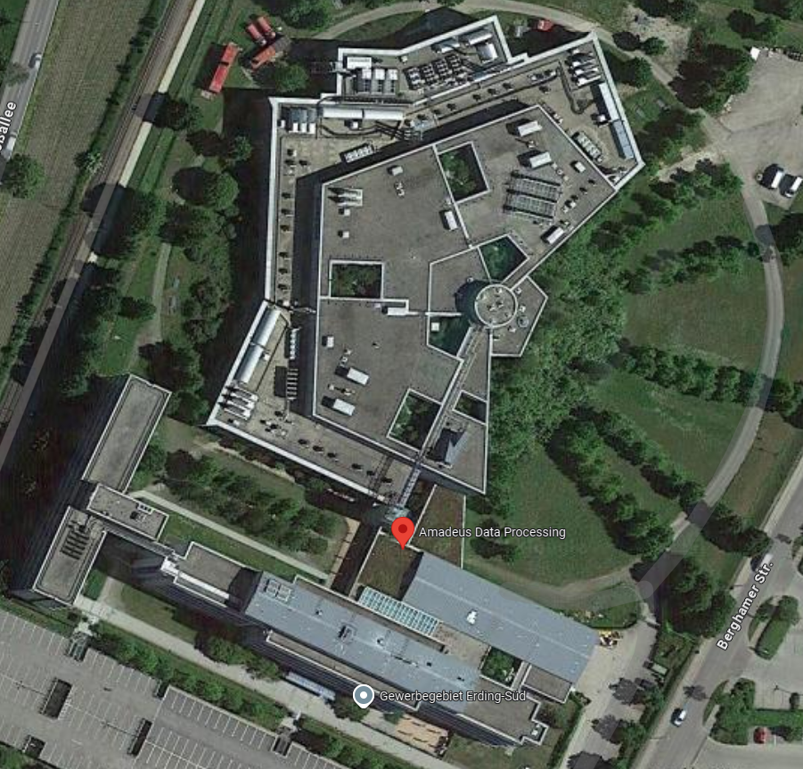

NOAH'S LED BOARD
Introduction and First Impressions
I attended the one-day Azubi action at Amadeus Data Processing GmbH

Source: Google Maps
We received broken laptops and had to identify the issues and fix them.
For example, there was a laptop that wouldn’t turn on.
In that case, we had to disassemble the laptop and insert the RAM and SSD.
After that, we visited the Data Center.
However, before we could enter the Data Center, we had to pass through multiple layers of security.
There were thousands of TB of saving capacit & servers including mainfraim computers.
Unfortunately, I wasn’t not allowed to take any pictures.
But I assure you, being inside the data center and seeing thausands of servers running, was impressive and unbelievable!!!
Link zu Amadeus